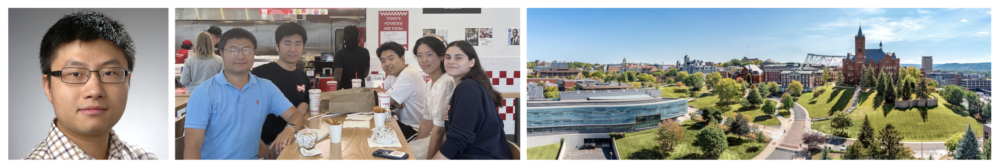

美国纽约州雪城大学计算机系的全栈系统安全实验室（Full Stack Systems Security Lab or FSSL）由汤宇哲副教授（博导）领导 [tristartom.github.io]。 研究方向是计算机安全和系统 (Systems security, software security, and performance efficiency)。 当前主要的研究对象是区块链，智能合约和去中心化系统（Blockchain, smart contracts, and DApps）上的安全和系统问题 。除了区块链，他们也对emerging infrastructures上的安全问题感兴趣，比如AI/LLM services，open-source software supply-chain（开源软件平台）等。
FSSL 实验室的研究成果发表在计算机顶会上，包括IEEE S&P，USENIX Security，ACM CCS, NDSS, ACM IMC, ESEC/FSE, ACM WWW，IEEE ICDE, ACM Middleware，Euro S&P等。 汤教授也担任了计算机领域的会议的程序委员会成员，如IEEE S&P, ACM CCS, NDSS, ACM WWW, Euro S&P, ACSAC, RAID等。这些成果也得到工业界的认可：FSSL实验室找到的bug获得了以太坊的bug bounty，开发的security patch被集成到在大众使用的区块链软件中，如Geth，Besu和OpenEthereum。实验室研究基金充足，主要来自美国国家科学基金委（NSF）和以太坊基金会。
FSSL研究组里现有多名博士生，学习之余常组织活动 [link]。毕业的博士生在美国高校任教，担任tenure track的助理教授。学生获得过以太坊奖学金（Ethereum Protocol Fellowship）和NortonLifeLock fellowship finalist，并在各大公司实习，如IBM Research，Amazon， CertiK, Chainlink等。
实验室现招收1名博士生，计划于2026年春季入学，有全额奖学金。招生对象一般要求:
本科毕业于985或较好的211学校。
有钻研精神和对博士研究有动力（strong motivation）。
计算机编程能力强，对计算机系统和安全研究有热情
优先考虑: 对编程感兴趣，读代码能力强，或者：
在如下开源领域的代码阅读或开发的经验：真实区块链项目，网络协议，人工智能AI/LLM服务
软件测试(software testing tools), 程序分析(program analysis), 或网络攻防(capture the flag)等
有兴趣的同学可发邮件至汤教授的邮箱 ytang100@syr.edu 。在邮件中附带你的英文简历和成绩单（CV and transcript）。如果有，也请附上代表性论文。 你要联系汤教授之前，不妨先想想，为什么想去他的组读博？
雪城大学计算机系的博士申请请参考学校网站： [link]
|  |
关于雪城大学计算机系: 雪城大学为R1研究型大学。计算机和电子工程系常年位居全美计算机专业的前列。目前，全系有42名教职员工，系里教授获得的奖项包括多名IEEE fellow，ACM fellow，AAAS fellow等。
雪城大学是一所私立研究型大学，学校以学生优先，有博士学生工会。雪城大学公共管理排名全美第一，多个学科全美排名前十，信息学院、Maxwell公民与公共事务学院、Newhouse公共传播学院、Martin J. Whitman商学院和法学院均在美国名列前茅。雪城大学体育氛围浓厚，拥有美国最大的大学体育馆。雪城大学的篮球队曾在2003年荣获全国冠军，足球队于今年2022年荣获全国冠军。NBA超级球星卡梅隆·安东尼为母校雪城大学捐赠300万美元，用于修建新的篮球训练场所。雪城大学的杰出校友包括现任美国总统乔·拜登和现任纽约州州长凯西.霍楚。
雪城，又译作锡拉丘兹市，为美国纽约州第五大城市，是纽约中部地区的经济和教育中心，以及交通枢纽。雪城有众多中餐厅（川菜，东北菜，火锅，烧烤）和中国超市，也有泰国，韩国，印度等来自世界各地的美食餐厅。雪城夏季天气凉爽，周边的有很多风景秀美的山和湖泊，非常适合户外爱好者。因受湖区气候效应的影响，冬季降雪丰沛，是滑雪爱好者的胜地。全球微芯片制造商美光科技将在雪城附近投资1000亿美元开设全世界最大的半导体工厂。这将极大的促进雪城的经济发展和消费升级。